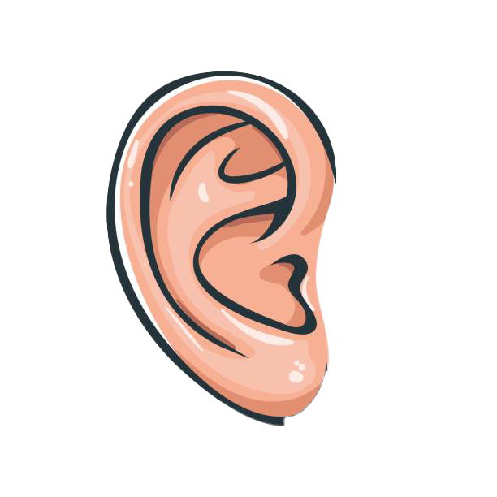

***UNDER CONSTRUCTION***UNDER CONSTRUCTION***UNDER CONSTRUCTION***UNDER CONSTRUCTION***UNDER CONSTRUCTION***UNDER CONSTRUCTION***UNDER CONSTRUCTION***UNDER CONSTRUCTION***UNDER CONSTRUCTION***UNDER CONSTRUCTION***UNDER CONSTRUCTION***UNDER CONSTRUCTION***
